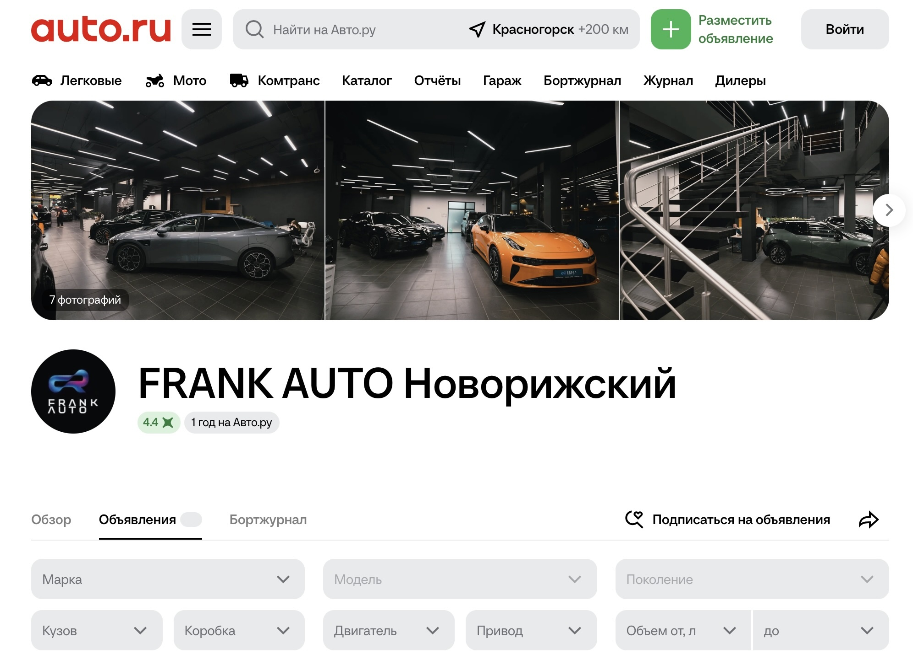
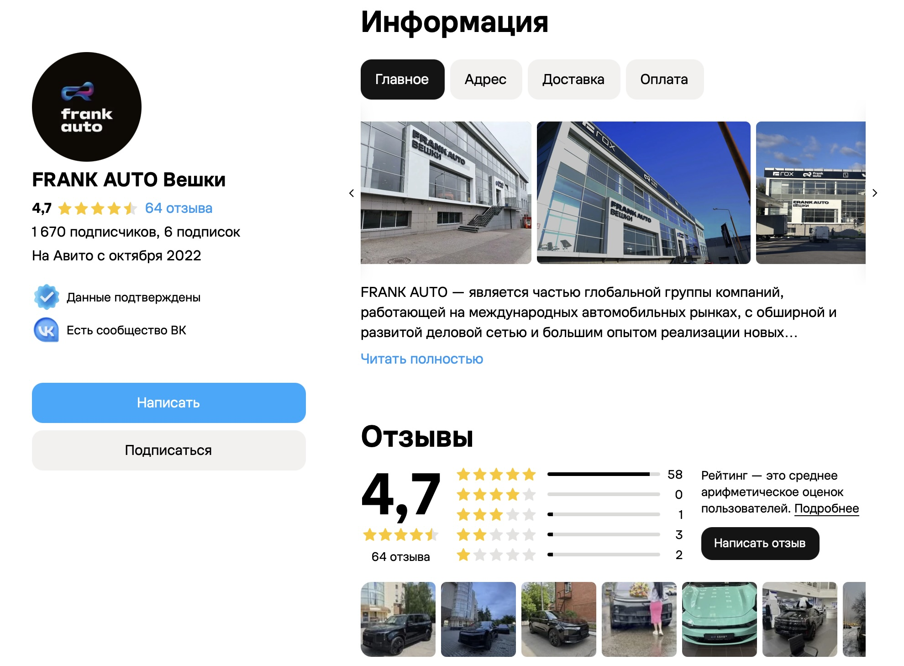
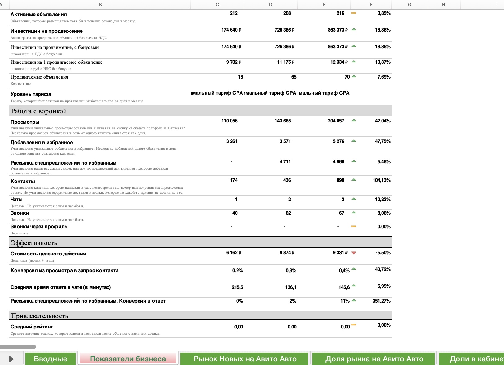
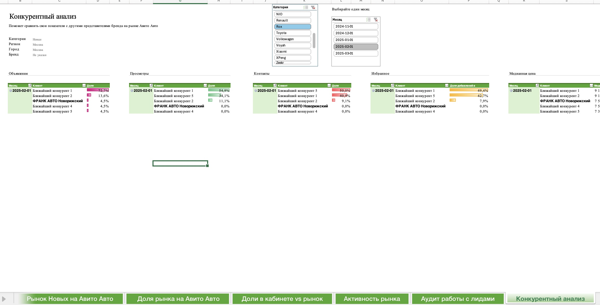

Classifieds: продвижение, связанное со stock
Управление размещением автомобилей на Avito и Auto.ru. Связка рекламных бюджетов с реальными остатками автомобилей, их наличием и локациями - чтобы продвигать то, что действительно можно продать сегодня.
333 позиции в рекламном портфеле
Управление размещением охватывало автомобили в наличии, а также машины в пути и доступные под заказ.
География продвижения - Москва и Московская область. Основные локации размещения: Вешки и Новая Рига.
От стратегии размещения до контроля результата
Модельный микс
Еженедельное согласование с отделом продаж приоритетных моделей и автомобилей для продвижения.
Приоритеты
Выделение бюджета на автомобили со сроком нахождения на складе 45-60+ дней.
Контент
Разработка УТП, улучшение качества карточек, анализ конкурентного предложения.
Медийная реклама
Запуск нового формата медийной рекламы Avito: концепция, креативы, настройка и бюджет 300 000 ₽.
Управление ставками
Поднятия и продвижение приоритетных автомобилей, самостоятельная корректировка ставок в аукционе.
Контроль
Мониторинг эффективности размещения и качества обработки обращений менеджерами.
Связать продвижение с реальными остатками
Продвижение на классифайдах не было системно связано с реальными остатками. Рекламировались модели, которых не было в наличии, а автомобили, которые долго находились на складе, не всегда получали необходимый приоритет.
Инициировала и выстроила взаимодействие отделов
Я предложила новую схему взаимодействия между отделами продаж, маркетингом и агентством. Самостоятельно разработала процесс, представила его руководителям, согласовала межфункциональное взаимодействие и условия работы, а затем организовала внедрение.
Разработка
Спроектировала схему взаимодействия подразделений и последовательность работы с объявлениями.
Согласование
Представила процесс руководителям, согласовала ответственность участников и сроки выполнения.
Внедрение
Организовала запуск процесса и взаимодействие между продажами, маркетингом и агентством.
Управление размещением и рекламными ставками
Я управляла размещением автомобилей по локациям Вешки и Новая Рига. Еженедельно согласовывала с продажами модельный микс и определяла приоритетные автомобили для дальнейшего продвижения.
По приоритетным моделям не только организовывала поднятия и продвижение, но и самостоятельно регулировала ставки в аукционе. Это позволяло управлять стоимостью трафика и получать целевые обращения.
Размещение постоянно обновлялось вслед за изменением стока: проданные автомобили снимались с публикации, новые машины добавлялись в рекламный портфель.


Управление через данные
Настроила аналитику внутри кабинетов Avito и Auto.ru. Контролировала конверсию из просмотра в контакт, стоимость целевого действия и качество обработки лидов. На основе данных перераспределяла бюджеты в пользу наиболее эффективных площадок и моделей.
Динамика активных объявлений
Показатели последнего отчётного периода

Понимание конкурентной среды
Отдельно вела конкурентный анализ в разрезе Москвы и Московской области. Оценивала цены и активность конкурентов, сопоставляла их предложения с нашими и корректировала модель продвижения, чтобы не переплачивать за трафик.

Запуск нового рекламного формата Avito
Самостоятельно запустила новый на тот момент формат медийной рекламы Avito с бюджетом 300 000 ₽. Разработала концепцию и креативы, настроила таргетинг и контролировала эффективность кампании.
Продвижение стало частью бизнес-процесса
Размещение стало управляемым процессом, связанным с фактическим наличием автомобилей и приоритетами продаж.
- Разработала и внедрила схему взаимодействия продаж, маркетинга и агентства.
- Организовала управление рекламным портфелем с учётом реального стока и локаций.
- Внедрила регулярный контроль эффективности размещения и рекламных инвестиций.
- Связала продвижение автомобилей с задачами отдела продаж и коммерческими приоритетами.
Обсудим задачу?
Открыта к предложениям на позиции руководителя маркетинга, Senior Brand Manager или CMO.
Связаться